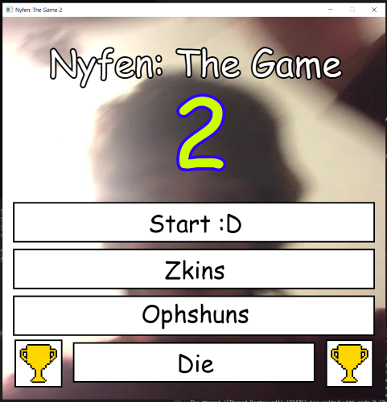
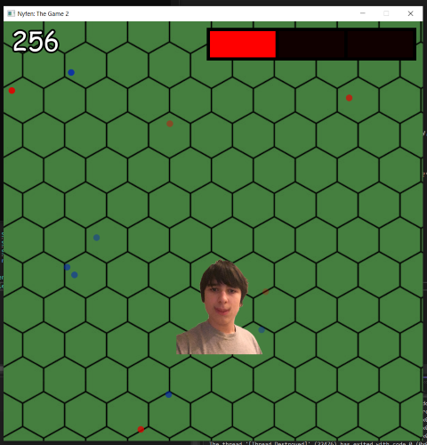
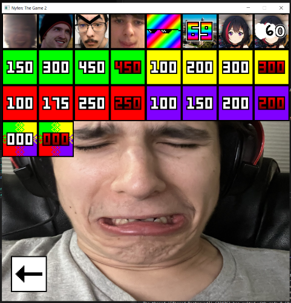

A Python script that randomizes the level locations in New Super Mario Bros. DS.
Projects using SFML
SFML is a graphics library, and I've used it for making some goofy little games from time to time. I don't have any open source projects working with SFML, but that doesn't mean I don't have any.

Nyfen: The Game 2 Title Screen
This is likely the most notable thing I have made using SFML, a game made for one of my friends which we called 'Nyfen: The Game 2'. It's a simple survival bullet hell game where you dodge circles or 'bullets' and try not to get hit.

Nyfen: The Game 2 Gameplay
This project had a lot going on in it, and was filled with a bunch of excessive content.
A Life Based Scoring System
Gameplay Modifiers
Achievements
I even included a remaster of the first Nyfen: The Game, where the orginal was initially made in godot.

Achievement Page
Unfortunately, due to my incredibly busy schedule I don't really have any other notable projects written in SFML. I hope to work with it more in the future, but it's incredibly limiting as the library itself only supports 2D rendering and working with audio inside of it is less than ideal.
Other Graphics Libraries
OpenGL
Similarly with SFML, I don't really have any notable projects made in OpenGL, in fact for the most part I barely even scratched the surface with it. The reason it's listed above any other graphics library I have used is because currently it's the one I have the most interest in.
Since OpenGL is so low level, it means that there are significantly less restrictions then compared to using a library with pre-built renderers. Raylib and SFML are very easy to learn, but it's a lot harder to get control over audio processing or ensuring good frame times.
The two most notable things I've used OpenGL for are making a 2D gravity simulation as well as an attempt at recreating Minecraft, because every good game developer needs to recreate Minecraft at least once in their life.
Raylib
Raylib is similar to SFML but with the added benefit of a built in 3D Renderer. I've mainly used it to test rendering 3D Models as well as Shaders. While I did have plans in the past to try and make a game using Raylib, I've become more engrossed in learning OpenGL and using that as my main Graphics Renderer.
LWJGL is interesting, as it's the one graphics library that I haven't explicitly made anything for on my own, but it is the own I have probably used the most. Most notably in working with the source code for Minecraft Alpha in an attempt to create a mod for said version. The main issue I have with LWJGL is that there are simply better libraries that I can use, OpenGL the C/C++ equivalent, with more low-level learning opportunities, Raylib can do 3D and Audio Management at a more simplictic level, and SFML is just more fun to write code for. For the most part I would prefer to keep Java as the language I write explicitly low-level software for.
Things I want to learn.
Additional Things I want to learn, regarding Rendering, Engine Development, Simulations, and more.
Rasterization
I've watched a lot of low-level programming videos regarding Game Development, and the main thing that always piques my interest is texture rasterization. There is an incredible video by Sebastian Lague regrading Software Rasterization. It's both in depth enough to where I get almost lost in the mathematics behind it while being informational enough to where I'm confident with a weekend and about 8 collective hours of sleep I could probably make something like this.
Simulations
I mentioned with OpenGL that I've made gravity simulation, however I'm also interested in making other types of physics simulations. Expanding on the concept, and recreating the solar system, or trying to simulate both the gravitation and visual effects of a black hole. Creating an atomic simulation based on quarks, photons, possibly even light itself. There are a lot of possibilities, and I have an interest in just about anything that creating a visual simulation for everything that we can and can not see isn't off the table.